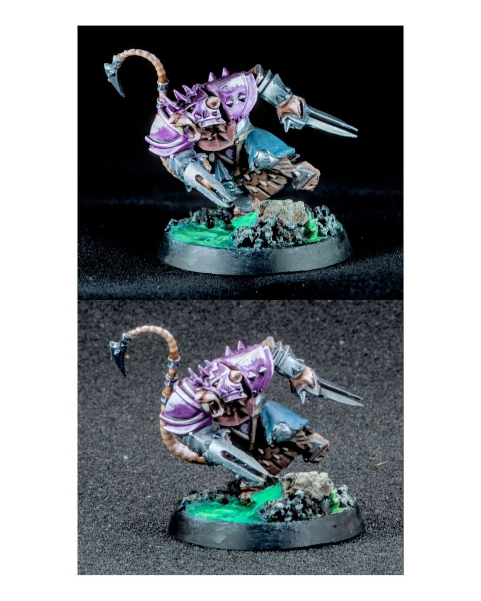
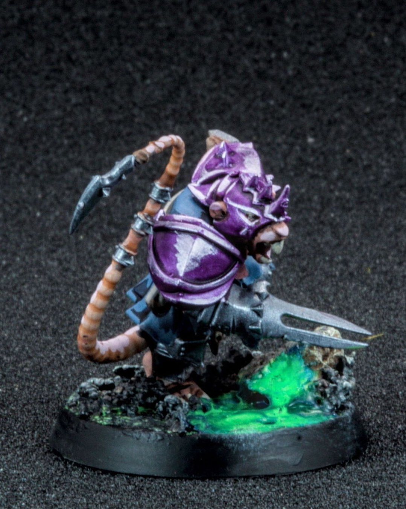
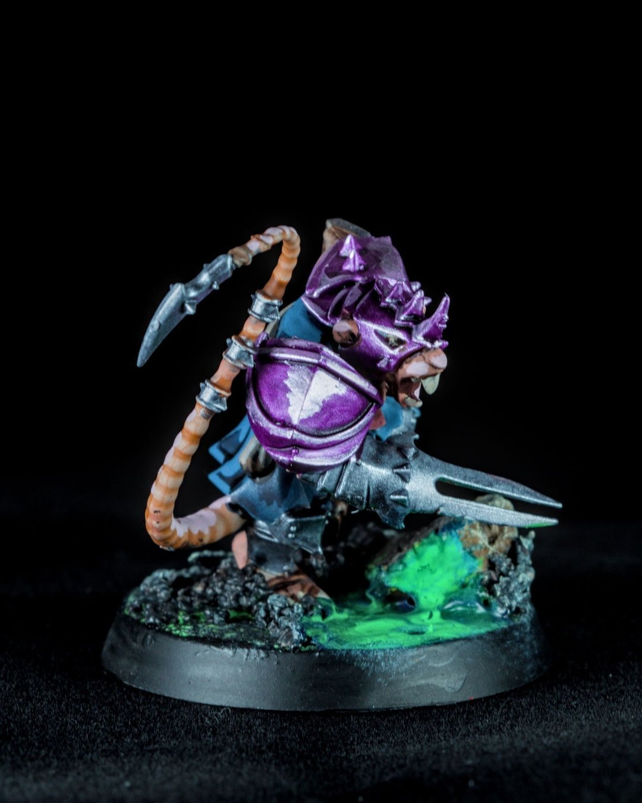
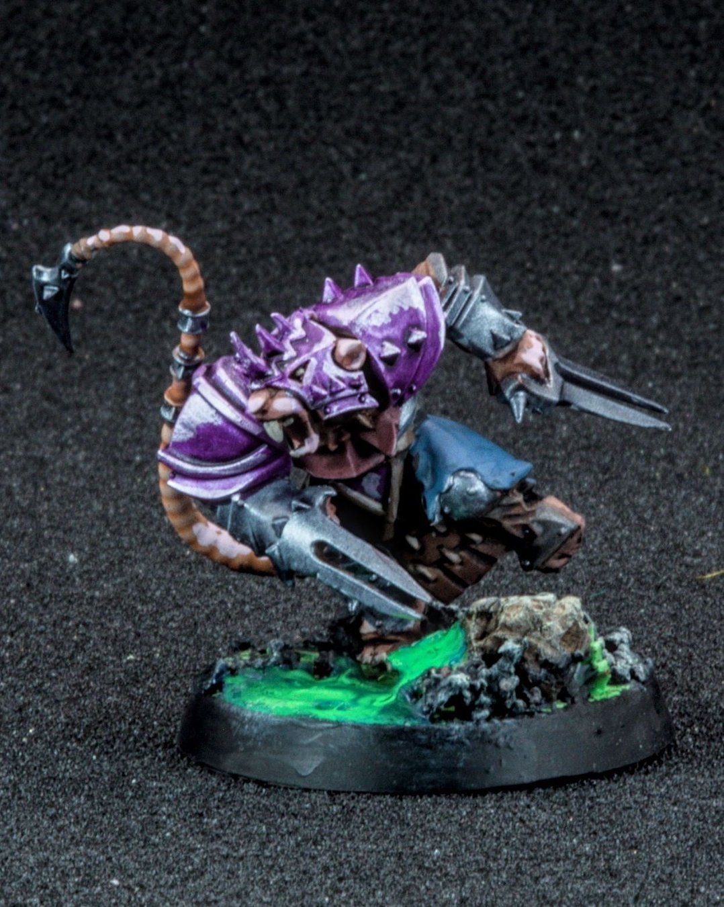
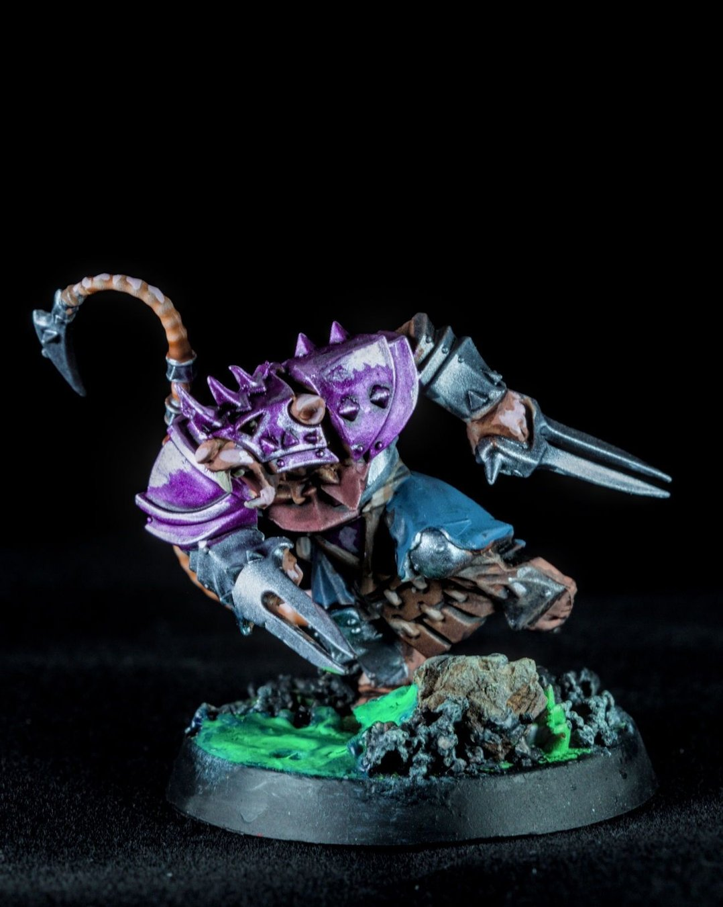

Foam vs. velvet backdrops
Dialing in the backdrop turned out to be one of those small changes that makes everything click. Same mini, same lighting, but the switch from foam to velvet pushes the whole shot into a different tier. The velvet just eats the light, no weird gradients, no fighting reflections, just a clean, deep black that lets the model do the work.
On the process side, this felt like leveling up a different part of the hobby. Foam is still great for quick setups, but it takes more tweaking to avoid that gray wash. My lightbox also came with a plastic backdrop, but the reflection line at the curve was impossible to ignore. Velvet is the easiest “set it and forget it” option so far, and honestly one of the cheapest upgrades I’ve made. Macro photography really is becoming its own rabbit hole… and I’m not mad about it 😅
#MiniaturePainting #Warhammer #Hobbies #Photography #BloodBowl
The full guide
- Shooting minis on an old DSLR (and when better gear actually helps) →My 2013 Canon Rebel and its kit lens, the settings card I started with, and what I'd change now: better light instead of flash.
- Foam vs. velvet: the cheapest photo upgrade I've made →Same mini, same light. Black velvet eats stray light so the background goes truly black and the paint does the work.
Gear in this post
- Glendan 10" photo light boxEven light for mini photos
- Black velvet photo backdropLight-absorbing, non-reflective black for dark backgrounds
Affiliate links. All gear